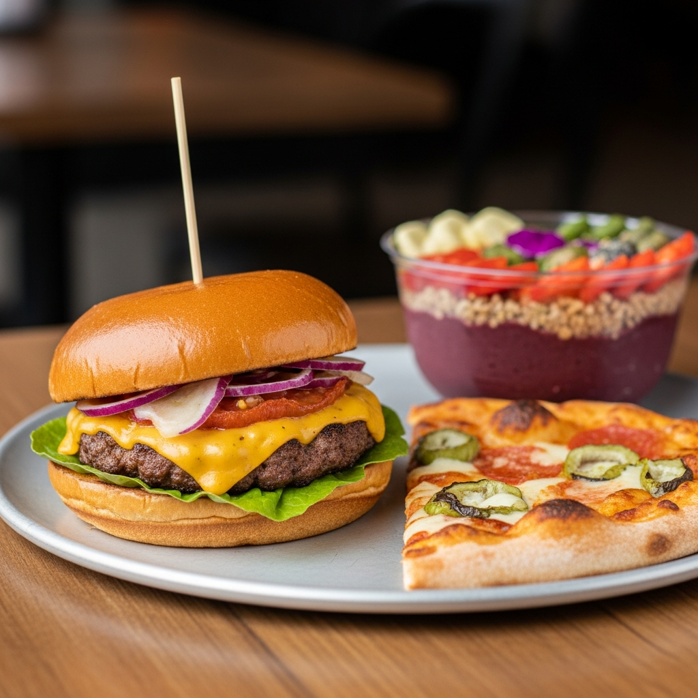
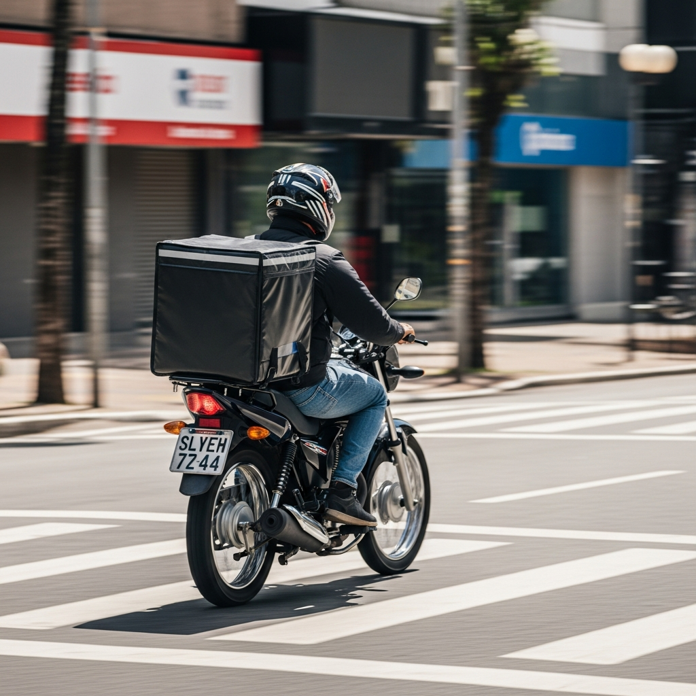

🎉 Chegou o
na Região Norte do Ceará e na Serra da Ibiapaba
Comida, entregas e corridas — tudo num app só
Tudo em um só app
3 serviços, 1 aplicativo

COMIDA
peça e receba rápido

ENTREGAS
mande e receba encomendas
CORRIDAS
vá aonde precisar
Bateu a fome?
Peça dos melhores lugares da cidade e receba na sua porta